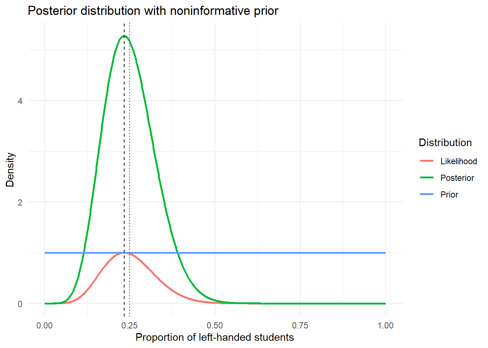
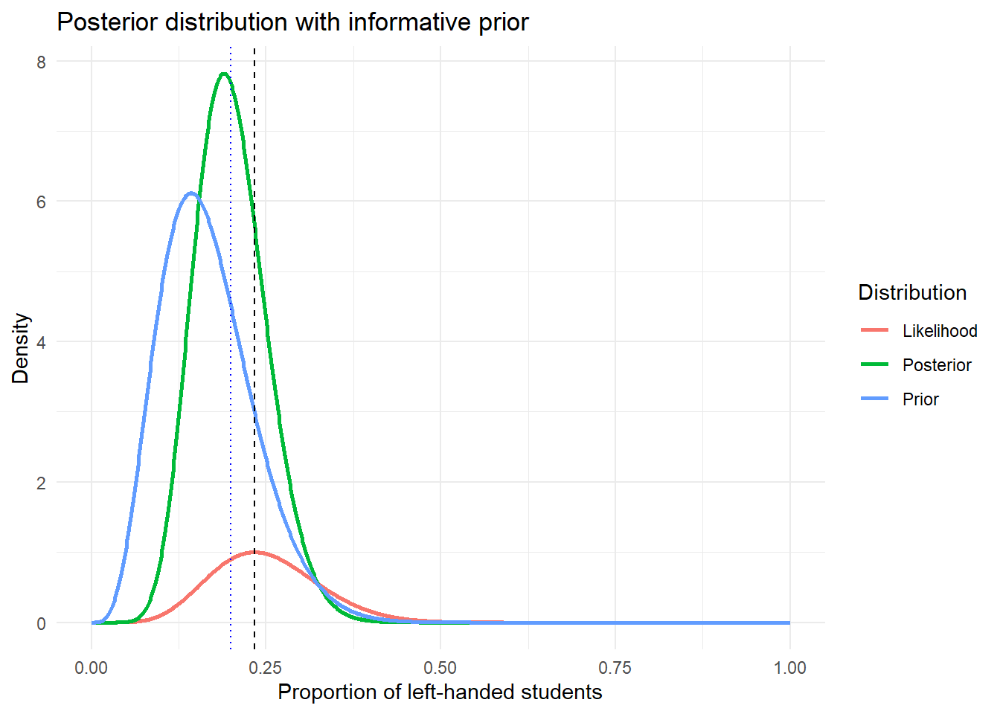

Chapter 3 Parameters, Priors and Posteriors
3.1 Introduction
The basic difference of Bayesian thinking from the frequentist approach is that the parameter is considered as random process with a distribution function. This distribution is then reflect the degree of our belief about the parameter before data is observed. Prior distribution satisfies the regularity condition of a probability distribution, non-negativity (because probability can not be negative), summed or integrated to 1 (certainty) and defined. Priors satisfying these conditions are referred “Proper” prior, otherwise “improper” prior. In this section different types of prior distribution is explored, how to graphically display and combine with likelihood to derive the posterior distribution. Objective priors are intended to be neutral and based on formal criteria, while subjective priors are more personalized and can incorporate individual expertise or prior knowledge.
3.2 Parameter(s)
A parameter is measure or characteristic that can describe or classify a particular system such as event, object, or population data. Any model expressed in terms of parameters is a parametric models. In the simple linear regression model \(y=\alpha + \beta * x + \epsilon\); \(\alpha\), \(\beta\) and \(\sigma^2_\epsilon=var(\epsilon)\) are considered as parameters and unknown.
3.2.1 Identifying parameters in a distribution
In the context of probability distributions, a parameter is a numerical characteristic that defines the shape, location, or scale of a distribution. For the normal distribution, the two key parameters are:
Mean (\(\mu\)) – Determines the of the distribution. Changing the mean shifts the distribution without affecting its shape.
Variance (\(\sigma^2\)) – Controls the of the distribution. A larger variance results in a wider, flatter distribution, while a smaller variance makes the distribution more peaked and concentrated around the mean.
Activity 2.1: Simulate a normal data with unknown mean and known variance, i.e., \((\mu, \sigma^2)\).
set.seed(123) # For reproducibility
x_vals <- seq(from = -20, to = 20,length.out = 500)
norm_dat <- data.frame(
x = rep(x_vals, 3),
pdf = c(dnorm(x_vals, mean = 0, sd = 2),
dnorm(x_vals, mean = 5, sd = 2),
dnorm(x_vals, mean = 10, sd = 2)),
dist = rep(c("N(0,4)", "N(5,4)", "N(10,4)"), each = length(x_vals))
)
head(norm_dat)## x pdf dist
## 1 -20.00000 3.847299e-23 N(0,4)
## 2 -19.91984 5.739487e-23 N(0,4)
## 3 -19.83968 8.548551e-23 N(0,4)
## 4 -19.75952 1.271201e-22 N(0,4)
## 5 -19.67936 1.887289e-22 N(0,4)
## 6 -19.59920 2.797466e-22 N(0,4)library(ggplot2)
ggplot(norm_dat) +
geom_line(aes(x = x, y = pdf, color = dist, group = dist), linewidth = 1) +
scale_x_continuous(limits = c(-10, 20)) +
labs(title = "Distribution of varied mean, constant variance",
x = "x",
y = "Density",
color = "Simulated Data") +
theme_bw() +
theme(legend.position = c(0.85, 0.8)) Figure 3.1: Likelihood function for normal distribution with random mean
The density plot in Figure 3.1 illustrates the density functions of three simulated normal data with the same variance but different means. All three distributions have the same shape because they share the same variability (\(\sigma^2=4\)).
# Generate data
set.seed(123) # For reproducibility
x_vals <- seq(-5, 15, length.out = 300) # Common x-range
norm_dat_var <- data.frame(
x = rep(x_vals, 3),
pdf = c(dnorm(x_vals, mean = 5, sd = 1),
dnorm(x_vals, mean = 5, sd = 2),
dnorm(x_vals, mean = 5, sd = 3)),
dist = rep(c("N(5,1)", "N(5,4)", "N(5,9)"), each = length(x_vals))
)
head(norm_dat_var)## x pdf dist
## 1 -5.000000 7.694599e-23 N(5,1)
## 2 -4.933110 1.498692e-22 N(5,1)
## 3 -4.866221 2.906000e-22 N(5,1)
## 4 -4.799331 5.609651e-22 N(5,1)
## 5 -4.732441 1.078035e-21 N(5,1)
## 6 -4.665552 2.062466e-21 N(5,1)Plot the density functions
ggplot(norm_dat_var, aes(x = x, y = pdf, color = dist, group = dist)) +
geom_line(linewidth = 1) +
scale_x_continuous(limits = c(-5, 15)) +
labs(title = "Effect of Variance on Normal Distributions",
x = "x",
y = "Density",
color = "Simulated Data") +
theme_bw() +
theme(legend.position = c(0.8, 0.8)) Figure 3.2: Likelihood function for normal distribution with random variance
Similarly, the plot in figure 3.2 illustrates the density function of normal data with varying variance but same mean. We can easily observe that as variance increases, the density curve flattens because probability mass is spread out over a larger range. The highest peak corresponds to the smallest variance because values are more concentrated near the mean. As variance increases, the distribution becomes wider and flatter.
Key insights
When we kept variance constant and changed the mean, the distribution shifted along the x-axis but retained its shape. When we kept mean constant and changed the variance, the shape of the distribution changed, higher variance made the distribution more spread out, while lower variance made it more concentrated. This information proves that mean and variance are the two parameters describing the location and shape of a normal distribution.
Additionally, consider a random variable \(y\) follows binomial distribution with parameter \(\theta\), i.e., \(y|\theta, n \sim Bin(n, \theta)\), where \(n\) represent the number of independent trials performed, and \(\theta\) represent the probability of getting success. The probability function of \(y\) is given by \[ P(y= y|\theta, n) = \binom{n}{y} \theta^y (1 - \theta)^{n - y}. \] Here \(\theta\) play the role of a parameter and different value result different likelihood value.
Activity 2.2: Simulate binomial data with \(n=30\) and plot the density function of \(y\) for three different values of \(\theta\).
# Parameters
library(dplyr)
n <- 30
y <- 0:n
theta <- c(0.10, 0.50, 0.90)
colors <- c("blue", "green", "red")
# Create data frame
df <- expand.grid(y = y, theta = theta) %>%
mutate(prob = dbinom(y, size = n, prob = theta),
group = factor(theta, labels = c("Bin(30, 0.10)", "Bin(30, 0.50)", "Bin(30, 0.90)")))# Plot
ggplot(df, aes(x = y, y = prob, color = group)) +
#geom_point() +
geom_line(linewidth = 1) +
labs(y = "P(Y=y)", color = "Distribution") +
scale_color_manual(values = colors) +
scale_x_continuous(limits = c(-1, 35)) +
labs(title = expression("Effect of " * theta * " on binomial distributions")) +
theme_bw()Figure 3.3: Binomial distribution with different \(\theta\).
Activity 2.3: Simulate binomial data with \(n=30\) and \(y=7\), and plot the likelihood function of \(y\) when for different value of \(\theta\).
# Simulaiton setting
n <- 30 # Number of trials
y <- 7 # Number of successes
# Likelihood function for Binomial distribution
likeld_func <- function(theta, n, y) {
choose(n, y) * (theta^y) * ((1 - theta)^(n - y))
}
# Possible Values of theta ranges from 0 to 1
theta_values <- seq(0, 1, length.out = 100)
# Use he sapply function to compute the likelihood function for each value of theta and
#store the result likelihood_values
likeld_values <- sapply(theta_values,
likeld_func,
n = n,
y = y)
#Create a dataframe
df <- data.frame(Theta = theta_values,
Likelihood = likeld_values)
#Print the first 5 rows of the datarame.
head(df)## Theta Likelihood
## 1 0.00000000 0.000000e+00
## 2 0.01010101 1.729335e-08
## 3 0.02020202 1.748393e-06
## 4 0.03030303 2.353783e-05
## 5 0.04040404 1.385933e-04
## 6 0.05050505 5.180956e-04The likelihood function is produced as follows:
library(ggplot2)
library(gridExtra)
ggplot(df, aes(x = Theta, y = Likelihood)) +
geom_line(color = "blue", linewidth = 1) +
labs(x = expression(theta[c]),
y = expression("Likelihood function for Binom(n=18, y=7, " * theta[c] * ")"),
title = "") +
theme_bw() +
theme(plot.title = element_text(hjust = 0.5)) +
theme(axis.text = element_text(size = 12), axis.title = element_text(size = 14))Figure 3.4: Likelihood function for the binomial distribution with n=30 and y=7
Figure 3.4 show the likelihood distribution of the observed data depends on its parameter \(\theta\).
Activity 2.4: Emergency Calls Suppose that a hospital receives emergency calls at an average of 10 calls per hour during a given day. If we assume that the calls arrive independently (meaning previous calls do not influence future calls), the number of calls follows a poisson process with a rate of \(\lambda\) (calls/hour). Based on this information, simulate 1000 hours of emergency calls with \(\lambda=10\) and analyze the number of calls received per hour.
# Set seed for reproducibility
set.seed(123)
# Define parameters
lambda <- 10
n_hours <- 1000
# Simulate Poisson distributed call arrivals
calls_per_hour <- rpois(n_hours, lambda)
# Compute Poisson PMF for comparison
x_vals <- 0:max(calls_per_hour)
poisson_probs <- dpois(x_vals, lambda)
# Create data frame for plotting
df <- data.frame(Calls=x_vals, Prob=poisson_probs)
head(df)## Calls Prob
## 1 0 4.539993e-05
## 2 1 4.539993e-04
## 3 2 2.269996e-03
## 4 3 7.566655e-03
## 5 4 1.891664e-02
## 6 5 3.783327e-02Plot the histogram of simulated data
ggplot(data.frame(calls_per_hour),
aes(x = calls_per_hour)) +
geom_histogram(aes(y = ..density..),
bins = 20,
fill = "skyblue",
color = "black",
alpha = 0.6) +
geom_line(data = df,
aes(x = Calls, y = Prob),
color = "red",
linewidth = 1) +
labs(title = "Poisson distribution of emergency calls per hour",
x = "Number of calls per hour",
y = "Probability") +
theme_bw()Figure 3.5: Plot the empirical vs theoretical poisson distribution of emergency calls per hour
The histogram closely matches the expected Poisson distribution, validating our assumption that the number of emergency calls per hour follows a Poisson process. This indicates that the Poisson model is appropriate for describing the arrival pattern of emergency calls.
The Likelihood function of a poisson distribution is \[ L(\lambda|y) = \prod^{n}_{i=1}\frac{e^{-\lambda}\lambda^{y_i}}{y_i!} \] Direct simplification of the likelihood function, which is the product of the individual likelihood, is computationally inconvinient, we use the log-likelihood for better numerical stability: \[ log\, L(\lambda|y) = \sum^n_{i=1}\left[-\lambda + y_ilog\,\lambda-log\, y_i!\right]. \]
The following code computes and plot the likelihood function for different \(\lambda\) Values.
# Simulate possible lambda values from 5 to 15
lambda_vals <- seq(5, 15, length.out = 100)
#Compute the likelihood function
log_likelihoods <- sapply(lambda_vals, function(l) sum(dpois(calls_per_hour, l, log = TRUE)))
# Normalize for better visualization
log_likelihoods <- log_likelihoods - max(log_likelihoods)
# Create data frame
df_lik <- data.frame(lambda_vals, log_likelihoods)
head(df_lik)## lambda_vals log_likelihoods
## 1 5.000000 -1919.646
## 2 5.101010 -1820.990
## 3 5.202020 -1726.249
## 4 5.303030 -1635.272
## 5 5.404040 -1547.918
## 6 5.505051 -1464.052Plot log-likelihood function
ggplot(df_lik, aes(x = lambda_vals,
y = log_likelihoods)) +
geom_line(color = "blue", size = 1) +
geom_vline(xintercept = mean(calls_per_hour),
linetype = "dashed",
color = "red",
size = 1) +
labs(title = "Log-Likelihood function for poisson process",
x = expression("Rate " * lambda * ""),
y = "Log-likelihood") +
theme_bw()Figure 3.6: Plot of log-likelihood function of a poisson process
The log-likelihood function peaks near the observed sample mean (\(\sim 10\)), which aligns with the MLE for the Poisson rate parameter \(\lambda\). In a Poisson process, the MLE for \(\lambda\) is given by: \[ \hat{\lambda} = \frac{1}{n} \sum_{i=1}^{n} y_i = \text{mean}(y) \] Since the peak of the log-likelihood function corresponds to this estimate, it confirms that the observed data supports \(\lambda \approx 10\) as the most likely value for the true rate of emergency calls per hour.
3.2.2 Why this matters in Bayesian analysis
Parameters are unknown in real-World problems: In Bayesian analysis, parameters like \(\mu\) and \(\sigma^2\) for normal variate are not fixed but uncertain. We use probability distributions to express our beliefs about them.
Priors reflect initial beliefs: Before seeing any data, we assign prior distributions to parameters to encode what we believe about them.
Posteriors update our knowledge: After observing data, Bayesian methods update our beliefs, leading to a posterior distribution that reflects both prior information and new evidence.
This exploration of parameters lays the foundation for understanding how priors (initial beliefs about parameters) evolve into posteriors (updated beliefs) in Bayesian inference.
3.3 Priors
As discussed in chapter 1, section 1.2.3, prior distribution can be specified for parameters. A prior can be:
Non-Informative or Weakly informative Prior: Non-informative prior distribution is specified when there is no prior knowledge or information is available related to the parameter of interest. This prior is often vague, diffuse or flat relative to the likelihood function. It doesn’t favor any particular outcome over others, allowing the data to have more influence on the posterior distribution. In some cases, noninformative prior may lead to nonintegrable posterior function. This posteriors are referred improper posteriors. However, while noninformative priors are very popular in some applications, they are not always easy to construct (See., Gelman et al., 2014).
Improper Prior: Improper prior is a prior distribution that does not integrate to one over its domain, that is; \[ \int p(\theta)d\theta = \infty. \] Improper priors are typically used as noninformative or flat priors and proper posterior distribution. For example, a flat prior \(p(\theta) = k\) over an infinite range \((-\infty, \infty)\), is an improper prior. Often improper priors leads to improper posterior distributions and only valid in practive if the posterior is proper, i.e., the posterior \(\int p(y|\theta)p(\theta)d\theta=1\). Statistical inference based on the improper posterior distribution is invalid.
Informative Prior: Informative prior is a prior specified to incorporate specific, substantive prior knowledge about the parameter based on previous studies, expert opinion, or other reliable sources. For instance, if we know from experience that a machine’s failure rate is low, we might use a prior that favors low failure rates. If previous studies suggest that a proportion \(\theta\) (e.g., success rate) is likely around 70%, we might use \[ \theta \sim Beta(7, 3), \] which reflects that the prior belief is based on 7 sucesses and 3 failures. If we have prior knowledge that the mean of a parameter, \(\mu\), is likeliy around 10 with high confidence, based on prior studies. We can specify a normal prior \[ \mu\sim \mathcal{N}(10, 2^2), \] where the mean is 10, and the standard deviation is 2, reflecting how confident we are in the prior belief. It is a prior that dominate the likelihood and has an impact on the posterior distribution.
Conjugate Priors: A \(conjugate\) \(prior\) is a specific type of prior distribution when combined with a specific likelihood, results in a posterior distribution of the same type as the prior. In short, prior distribution and the derived posterior distribution belong to the same family of distribution. For example, suppose a random variable follows binomial distribution, in short, \(y\sim Bin(m \theta)\) where \(n\) is the number of trials, and \(\theta\) is the success probability. The distribution of \(y\) is \[ p(y|\theta)\propto \theta^y(1-\theta)^{n-y}. \] Since, \(\theta\) is assumed to be a random process, the conjugate prior is \[ \theta\sim Beta(\alpha, \beta). \] The updated posterior, i.e., combining likelihood and prior, the posterior distribution is \[ \theta|y \sim Beta(\alpha + y, \beta+n-y), \] which is recognized as a Beta distribution with shape and scale parameters \(\alpha+y\) and \(\beta+n-y\), respectively. Here we can easily observe that both prior and the posterior distributions follow Beta distribution. Hence Beta Prior is the natural conjugate prior for \(\theta\), the probability of success.
If \(\theta\) represents the parameter of interest, the prior distribution for \(\theta\) is denoted as \(p(\theta)\). If there are multiple parameters, the joint prior distribution is written as \(p(\theta_1, \theta_2)\).
3.3.1 Uniform or Discrete Prior
If a distribution function has a constant trend over the range space of the parameter, then the parameter has discrete distribution function. If the parameter \(\theta\) takes discrete or countably infinite set of values, a discrete prior can be specified. For example, if a population of successes and failures where \(\theta\) represent the proportion of success, \(\theta\) would take one of the discrete values in the set \({0.0, 0.01, \ldots, 0.99, 1.0}\), and the prior would be a probability distribution over these values.
library(ggplot2)
p <- seq(0, 1, by = 0.01)
prior <- 1 / 101 + 0 * p
df_prior <- cbind(p=p, prior=prior)
head(df_prior)## p prior
## [1,] 0.00 0.00990099
## [2,] 0.01 0.00990099
## [3,] 0.02 0.00990099
## [4,] 0.03 0.00990099
## [5,] 0.04 0.00990099
## [6,] 0.05 0.00990099ggplot(df_prior, aes(x = p, y = prior)) +
geom_linerange(aes(ymin = 0, ymax = prior),
color = "blue") +
labs(title = "",
x = expression(theta),
y = "Prior probability") +
ylim(0, 0.015) +
theme_bw()Figure 3.7: Discrete prior distribution of \(\theta\)
Uniform or discrete prior assumes that all values within a range are equally likely, and used when no prior information is available towards the parameter of interest.
3.3.2 Normal or Gaussian Prior
A normal prior is a prior with a normal distribution centered around its mean value with some uncertainty. It is used when we expect values to cluster around a mean.
x_vals <- seq(-4, 4, length.out = 100)
data <- data.frame(x = x_vals, density = dnorm(x_vals, mean = 0, sd = 1))
ggplot(data, aes(x = x, y = density)) +
geom_line(color = "blue", size = 1) +
labs(title = "",
x = expression(theta),
y = "Density") +
theme_minimal()Figure 3.8: Normal prior distribution of \(\theta\)
3.3.3 Beta Prior
In probability theory, Beta distribution is a family of continuous probability distribution often used to model the uncertainty about the probability of success of an experiment. It is parametrized by shape parameters \(\alpha\) and \(\beta\) both greater than 0, which shape the distribution.
# Create a sequence of x values from 0 to 1
x_vals <- seq(0, 1, length.out = 100)
# Compute different Beta densities for the given parameters
data <- data.frame(
x = rep(x_vals, 6),
density = c(
dbeta(x_vals, shape1 = 0.5, shape2 = 0.5), # Beta(0.5, 0.5)
dbeta(x_vals, shape1 = 1, shape2 = 1), # Beta(1, 1)
dbeta(x_vals, shape1 = 2, shape2 = 2), # Beta(2, 2)
dbeta(x_vals, shape1 = 1, shape2 = 3), # Beta(1, 3)
dbeta(x_vals, shape1 = 5, shape2 = 2), # Beta(5, 2)
dbeta(x_vals, shape1 = 2, shape2 = 5) # Beta(2, 5)
),
Beta_Type = rep(c("Beta(0.5,0.5)",
"Beta(1,1)",
"Beta(2,2)",
"Beta(1,3)",
"Beta(5,2)",
"Beta(2,5)"),
each = 100)
)# Plot using ggplot2
library(ggplot2)
ggplot(data, aes(x = x,
y = density,
color = Beta_Type)) +
geom_line(size = 1) +
labs(title = "",
x = expression(theta),
y = "Density",
color = "Distribution") +
theme_bw() +
scale_color_manual(values = c("red",
"blue",
"green",
"purple",
"orange",
"brown"))Figure 3.9: Beta prior distribution with different \(\alpha\) and \(\beta\) values
The plot in figure 3.9 show various prior beliefs about probabilities before observing data. Forexample, the \(Beta(0.5, 0.5)\) prior refers to the U-Shaped Jeffreys Prior with higher densities near 0 and 1. It is often used to define a noninformative prior with a strong prior belief that the probability is either very low or very high. The \(Beta(1,1)\) refers to the Uniform Prior or flat prior distribution. It is often used to define a noninformative prior with a strong prior belief to assigns equal probability to the parameter. The \(Beta(1, 3)\), \(Beta(2,5)\), and \(Beta(5, 2)\) priors express preference for certain probability ranges, whereas the \(Beta(2, 2)\) prior is a symmetric or normal prior favoring moderate values. If we assume that \(\alpha-1\) as the number of successes and \(\beta-1\) as the number of failures, \(Beta(2, 2)\) means you getting \(1\) success and \(1\) failure, so that the probability of the success would become the highest at 0.5. Each of the priors shown in figure 3.9 can be used depending on our beliefs before observing data.
In summary
Beta prior is a conjugate prior with
- Bernoulli, binomial, negative binomial, and geometric distributions.
Dirichlet prior is conjugate prior with
- Multinomial distribution
Normal prior is conjugate prior with
- Normal distribution when used for the mean and the variance is known
Gamma (Inverse-Gamma) prior is conjugate prior with
- Normal distribution with known mean when used for the precision (variance) the variance. Precision is inverse of a variance parameter.
3.4 Posterior distributions
The mechanism that underpins all of Bayesian statistical analysis is Bayes’ rule9, which describes how to update uncertainty in light of new information, evidence, or data.
Example 1.4: Continuing example 1.4 in Chapter 1, find the posterior distribution of the proportion of left-handed students in the population assuming (i) uninformative prior, (ii) informative prior assuming 5 - 20% of people are left-handed according to the literature.
Solution - Recall that the random variable \(y\) has a binomial distribution:
\[ y \sim Bin(n=30, \theta),\,\, \] with the likelihood function: \[ L(\theta|y) = \binom{n}{y} \theta^y (1 - \theta)^{n - y}, \]
The natural conjugate prior for a binomial parameter \(\theta\) is the \(Beta(\alpha, \beta)\) prior as discussed in the section 2.3. The posterior distribution of \(\theta|y\) (the derivation is discussed in the next chapter), has a Beta distribution, i.e., \(\theta|y\sim Beta(y + \alpha, n - y + \beta)\). The following code simulate and plot both prior and prior distribution.
# Given data
y <- 7 # Left-handed students
n <- 30 # Total students
# Create a sequence of p values for density plotting
p_seq <- seq(0, 1, length.out = 1000)
likelihood <- dbinom(y, n, p_seq) # Likelihood (up to scale factor)
likelihood <- likelihood / max(likelihood)
p_hat <- y / n # MLE estimate
p_hat## [1] 0.2333333Uninformative (Uniform) prior
# Define priors
alpha_unif <- 1; beta_unif <- 1 #
# Compute posterior parameters
post_alpha_unif <- alpha_unif + y
post_beta_unif <- beta_unif + (n - y)
# Compute densities
prior_unif <- dbeta(p_seq, alpha_unif, beta_unif)
posterior_unif <- dbeta(p_seq, post_alpha_unif, post_beta_unif)Create dataframe for noninformative prior
df <- data.frame(
p = rep(p_seq, 3),
Density = c(prior_unif, likelihood, posterior_unif),
Distribution = rep(c("Prior", "Likelihood", "Posterior"),
each = length(p_seq))
)
head(df)## p Density Distribution
## 1 0.000000000 1 Prior
## 2 0.001001001 1 Prior
## 3 0.002002002 1 Prior
## 4 0.003003003 1 Prior
## 5 0.004004004 1 Prior
## 6 0.005005005 1 PriorPlot for uninformative prior
library(ggplot2)
ggplot(df, aes(x = p, y = Density, color = Distribution)) +
geom_line(size = 1) +
geom_vline(xintercept = p_hat,
linetype = "dashed",
color = "black",
label="MLE") +
geom_vline(xintercept = (post_alpha_unif / (post_alpha_unif + post_beta_unif)),
linetype = "dotted",
color = "blue",
label="Posterior Mean") +
theme_minimal() +
labs(title = "Posterior distribution with noninformative prior",
x = "Proportion of left-handed students")
Informative prior
Create a dataframe for informative prior
alpha_inf <- 5; beta_inf <- 25 # Informative prior (centered around 10%)
post_alpha_inf <- alpha_inf + y
post_beta_inf <- beta_inf + (n - y)
prior_inf <- dbeta(p_seq, alpha_inf, beta_inf)
posterior_inf <- dbeta(p_seq, post_alpha_inf, post_beta_inf)
df_inf <- data.frame(
p = rep(p_seq, 3),
Density = c(prior_inf, likelihood, posterior_inf),
Distribution = rep(c("Prior", "Likelihood", "Posterior"), each = length(p_seq))
)
head(df_inf)## p Density Distribution
## 1 0.000000000 0.000000e+00 Prior
## 2 0.001001001 5.819976e-07 Prior
## 3 0.002002002 9.090589e-06 Prior
## 4 0.003003003 4.492596e-05 Prior
## 5 0.004004004 1.386060e-04 Prior
## 6 0.005005005 3.303250e-04 Prior# Plot for informative prior
ggplot(df_inf, aes(x = p,
y = Density,
color = Distribution)) +
geom_line(size = 1) +
geom_vline(xintercept = p_hat,
linetype = "dashed",
color = "black",
label="MLE") +
geom_vline(xintercept = (post_alpha_inf / (post_alpha_inf + post_beta_inf)),
linetype = "dotted",
color = "blue",
label="Posterior Mean") +
theme_minimal() +
labs(title = "Posterior distribution with informative prior",
x = "Proportion of left-handed students")
Activity:
Do people prefer to use the word “data” as singular or plural? Data journalists at \(FiveThirtyEight\) conducted a poll to address this question (and others). Rather than simply ask whether the respondent considered “data” to be singular or plural, they asked which of the following sentences they prefer:
Some experts say it’s important to drink milk, but the data is inconclusive.
Some experts say it’s important to drink milk, but the data are inconclusive.
Suppose we wish to study the opinions of students in Cal Poly statistics classes regarding this issue. That is, let \(\theta\) represent the population proportion of students in Cal Poly statistics classes who prefer to consider data as a singular noun, as in option a) above. To illustrate ideas, we’ll start with a prior distribution which places probability 0.01, 0.05, 0.15, 0.30, 0.49 on the values 0.1, 0.3, 0.5, 0.7, 0.9, respectively.
Before observing any data, suppose we plan to randomly select a single Cal Poly statistics student. Consider the unconditional prior probability that the selected student prefers data as singular. (This is called a prior predictive probability.) Explain how you could use simulation to approximate this probability.
Compute the prior predictive probability from the previous part.
Before observing any data, suppose we plan to randomly select a sample of 35 Cal Poly statistics students. Consider the unconditional prior distribution of the number of students in the sample who prefer data as singular. (This is called a prior predictive distribution.) Explain how you could use simulation to approximate this distribution. In particular, how could you use simulation to approximate the prior predictive probability that at least 34 students in the sample prefer data as singular?
Compute and interpret the prior predictive probability that at least 34 students in a sample of size 35 prefer data as singular. For the remaining parts, suppose that 31 students in a sample of 35 Cal Poly statistics students prefer data as singular.
Find the posterior distribution of \(\theta\).
Now suppose we plan to randomly select an additional Cal Poly statistics student. Consider the posterior predictive probability that this student prefers data as singular. Explain how you could use simulation to estimate this probability.
Compute the posterior predictive probability from the previous part.
Suppose we plan to collect data on another sample of 35 Cal Poly statistics students. Consider the posterior predictive distribution of the number of students in the new sample who prefer data as singular. Explain how you could use simulation to approximate this distribution. In particular, how could you use simulation to approximate the prior predictive probability that at least 34 students in the sample prefer data as singular? (Of course, the sample size of the new sample does not have to be 35. However, we’re keeping it the same so we can compare the prior and posterior predictions.)
Compute and interpret the posterior predictive probability that at least 34 students in a sample of size 35 prefer data as singular.
Solution
- If we knew what \(\theta\) was, this probability would just be \(\theta\). For example, if \(\theta = 0.9\), then there is a probability of 0.9 that a randomly selected student prefers data singular. If \(\theta\) were 0.9, we could approximate the probability by constructing a spinner with 90% of the area marked as ``success”, spinning it many times, and recording the proportion of spins that land on success, which should be roughly 90%. However, 0.9 is only one possible value of \(\theta\). Since we don’t know what \(\theta\) is, we need to first simulate a value of it, giving more weight to \(\theta\) values with high prior probability. Therefore, we
Simulate a value of \(\theta\) from the prior distribution
Given the value of \(\theta\), construct a spinner that lands on success with probability \(\theta\). Spin the spinner once and record the result, success or not.
Repeat steps 1 and 2 many times, and find the proportion of repetitions which result in success. This proportion approximates the unconditional prior probability of success.
Use the law of total probability, where the weights are given by the prior probabilities. \[ 0.1(0.01) + 0.3(0.05) + 0.5(0.15) + 0.7(0.30) + 0.9(0.49) = 0.742 \] (This calculation is equivalent to the expected value of \(\theta\) according to its prior distribution, that is, the prior mean.)
If we knew what \(\theta\) was, we could construct a spinner that lands on success with probability \(\theta\), spin it 35 times, and count the number of successes. Since we don’t know what \(\theta\) is, we need to first simulate a value of it, giving more weight to \(\theta\) values with high prior probability. Therefore, we
Simulate a value of \(\theta\) from the prior distribution.
Given the value of \(\theta\), construct a spinner that lands on success with probability \(\theta\). Spin the spinner 35 times and count \(y\), the number of spins that land on success.
Repeat steps 1 and 2 many times, and record the number of successes (out of 35) for each repetition. Summarize the simulated \(y\) values to approximate the prior predictive distribution. To approximate the prior predictive probability that at least 34 students in a sample of size 35 prefer data as singular, count the number of simulated repetitions that result in at least 34 successes (\(y \geq 34\)) and divide by the total number of simulated repetitions.
- If we knew \(\theta\), the probability of at least 34 (out of 35) successes is, from a Binomial distribution, \[ \binom{35}{34} \theta^{34}(1 - \theta) + \theta^{35} \] Use the law of total probability again:
According to this model, about 6% of samples of size 35 would result in at least 34 successes. The value 0.06 accounts for both (1) our prior uncertainty about \(\theta\), and (2) sample-to-sample variability in the number of successes \(y\).
- The likelihood is \(\binom{35}{31} \theta^{31} (1 - \theta)^4\), a function of \(\theta\); \(\texttt{dbinom(31, 35, \theta)}\). The posterior places almost all probability on \(\theta = 0.9\), due to both its high prior probability and high likelihood.
##
## Attaching package: 'janitor'## The following objects are masked from 'package:stats':
##
## chisq.test, fisher.testtheta = seq(0.1, 0.9, 0.2)
# prior
prior = c(0.01, 0.05, 0.15, 0.30, 0.49)
# data
n = 35 # sample size
y = 31 # sample count of success
# likelihood, using binomial
likelihood = dbinom(y, n, theta) # function of theta
# posterior
product = likelihood * prior
posterior = product / sum(product)
# bayes table
bayes_table = data.frame(theta,
prior,
likelihood,
product,
posterior)
bayes_table %>%
adorn_totals("row") %>%
kable(digits = 4, align = 'r')| theta | prior | likelihood | product | posterior |
|---|---|---|---|---|
| 0.1 | 0.01 | 0.0000 | 0.0000 | 0.0000 |
| 0.3 | 0.05 | 0.0000 | 0.0000 | 0.0000 |
| 0.5 | 0.15 | 0.0000 | 0.0000 | 0.0000 |
| 0.7 | 0.30 | 0.0067 | 0.0020 | 0.0201 |
| 0.9 | 0.49 | 0.1998 | 0.0979 | 0.9799 |
| Total | 1.00 | 0.2065 | 0.0999 | 1.0000 |
- The simulation would be similar to the prior simulation, but now we simulate \(\theta\) from its posterior distribution rather than the prior distribution.
Simulate a value of \(\theta\) from the posterior distribution.
Given the value of \(\theta\), construct a spinner that lands on success with probability \(\theta\). Spin the spinner once and record the result, success or not.
Repeat steps 1 and 2 many times, and find the proportion of repetitions which result in success. This proportion approximates the unconditional posterior probability of success.
- Use the law of total probability, where the weights are given by the posterior probabilities.
\[ 0.1(0.0000) + 0.3(0.0000) + 0.5(0.0000) + 0.7(0.0201) + 0.9(0.9799) = 0.8960 \]
(This calculation is equivalent to the expected value of \(\theta\) according to its posterior distribution, that is, the posterior mean.)
- The simulation would be similar to the prior simulation, but now we simulate \(\theta\) from its posterior distribution rather than the prior distribution.
Simulate a value of \(\theta\) from the posterior distribution.
Given the value of \(\theta\), construct a spinner that lands on success with probability \(\theta\). Spin the spinner 35 times and count the number of spins that land on success.
Repeat steps 1 and 2 many times, and record the number of successes (out of 35) for each repetition. Summarize the simulated values to approximate the posterior predictive distribution. To approximate the posterior predictive probability that at least 34 students in a sample of size 35 prefer data as singular, count the number of simulated repetitions that result in at least 34 successes and divide by the total number of simulated repetitions.
Since the posterior probability that \(\theta\) equals 0.9 is close to 1, the posterior predictive distribution would be close to, but not quite, the$ Binom(35, 0.9)$ distribution.
- Use the law of total probability again, but with the posterior probabilities rather than the prior probabilities as the weights.
\[ \left(\binom{35}{34} (0.1)^{34} (1 - 0.1) + 0.1^{35} \right)(0.0000) + \left(\binom{35}{34} (0.3)^{34} (1 - 0.3) + 0.3^{35} \right)(0.0000) \\ + \left(\binom{35}{34} (0.5)^{34} (1 - 0.5) + 0.5^{35} \right)(0.0000) + \left(\binom{35}{34} (0.7)^{34} (1 - 0.7) + 0.7^{35} \right)(0.0201) \\ + \left(\binom{35}{34} (0.9)^{34} (1 - 0.9) + 0.9^{35} \right)(0.9799) = 0.1199 \]
According to this posterior model, about 12% of samples of size 35 would result in at least 34 successes. The value 0.12 accounts for both (1) our posterior uncertainty about \(\theta\), after observing the sample data, and (2) sample-to-sample variability in the number of successes \(y\) for the yet-to-be-observed sample.